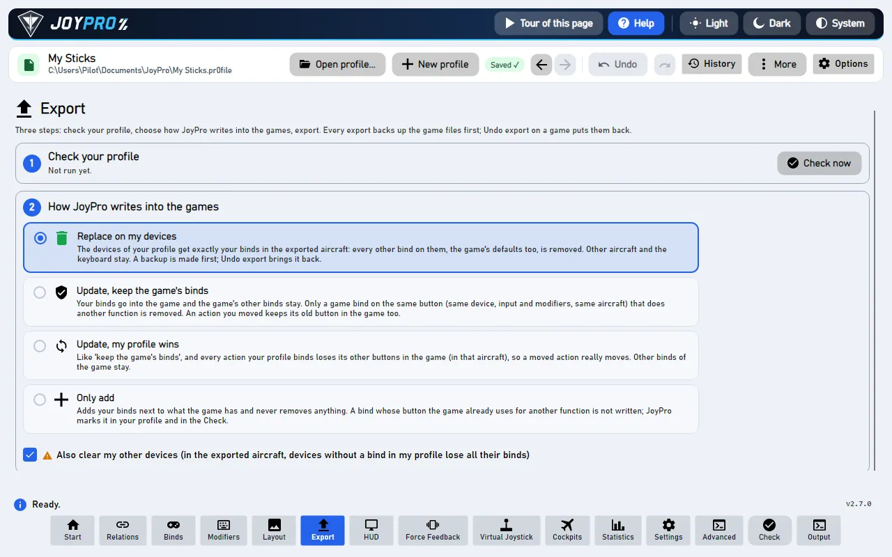

G-Rebels is een cyberpunk-luchtgevechtgame op Unreal Engine 5: je vliegt een VTOL boven megasteden. De game zet elke joystick die je aanzet op een kanaal (0 tot 5) en bewaart de rol van elke as (pitch, roll, yaw, stuwkracht, zijwaarts strafen, omhoog / omlaag) en de knoptoewijzingen per kanaal in twee opslagbestanden. JoyPro leest die rollen en toewijzingen in je profiel en schrijft ze terug; toetsenbord, gamepad en muis blijven zoals de game ze heeft.
G-Rebels rechtstreeks (eigen toewijzingsbestanden)
- Ondersteuning
- rechtstreeks (eigen toewijzingsbestanden)
- Engine-commando
engine grebels- Toewijzingsbestand
%LOCALAPPDATA%\G_Rebels\Saved\SaveGames\SaveOptions.sav(GVAS, asrollen ter plekke aangepast) +EnhancedInputUserSettings.sav(knoppen)- Inputs die de game leest
- leest 96 knoppen, 24 assen, geen hats per joystick (gedocumenteerd)
- Commandolijst uit
- JoyPro's eigen tabel (asrollen, knoppen)
- In-game test
- 18/18 stappen geslaagd (2026-10-11)
- ✓ Importeren
- ✓ Exporteren
- ✗ Toetsenbordtoewijzingen
- ✗ Modifiers
- ✓ Commandolijst gemaakt op je pc
- ✓ Gamebewaking
- ✗ Ascurves en dode zonesG-Rebels: alleen omkeren.
- ✗ Bedieningsinstellingen van de game
- ✗ Force-feedbackinstellingen in de game
- ✗ Force feedback uit telemetrie
- ✗ Telemetrie-opname
- ✓ Virtuele joystick (vJoy)
- ◐ Virtuele Xbox-pad
- ✓ Virtuele functies
- ◐ Installatiewizard / Automatisch toewijzen
- ✗ Cockpits
- ✓ Spiekbrieven
- ✓ In-game test
Uit de ondersteuningstabel, gegenereerd uit de code van de engine: alle games.
#In 3 stappen aan de slag
- Alles voor me instellen
op de startpagina - Deze knoppen gebruiken
bekijk eerst de lijst - Naar mijn game schrijven
houd G-Rebels gesloten
Vooraf, één keer per apparaat in de game: geef het een kanaal onder OPTIONS > INPUT > DEVICES. Wijzig één asrol op zijn tabblad JST. Wijs één knop toe. (Details hieronder.)
Daarna: je toewijzingen staan op het tabblad JST van het apparaat.
Heb je eerder knoppen toegewezen in G-Rebels? Dan biedt de startpagina Importeren, dan gaten vullen aan. Je toewijzingen blijven, en alleen vrije knoppen krijgen nieuwe taken. Zie Snelstart: mijn stick laten werken.
#Wat JoyPro doet voor G-Rebels
- Importeren: de asrollen van elk kanaal (welke stickas pitch, roll, yaw, stuwkracht, zijwaarts strafen, omhoog / omlaag is), met omkeren, en de knoptoewijzingen die JoyPro kent, komen in je profiel op je echte apparaten.
- Relaties: "Pitch" in G-Rebels kan dezelfde relatie zijn als pitch in je andere games.
- Exporteren: JoyPro stelt de asrollen en knoptoewijzingen in op de kanalen van je apparaten. Het voegt nooit een kanaal of apparaat toe: dat deel doe je één keer in de game.
#Je G-Rebels-toewijzingen importeren
- Open Start. Vraagt de kaart van G-Rebels om een commandolijst, druk dan op Lijst maken: JoyPro schrijft zijn eigen tabel met de asrollen en knoppen van de game.
- Druk op Importeren op de kaart van G-Rebels, laat Aan mijn profiel toevoegen (aanbevolen) staan en druk op Nu importeren.
- Mijn relaties bekijken opent wat er binnenkwam.


#Relaties maken en controleren
Wijs je relaties toe aan de acties van G-Rebels op de pagina Relaties (zie de werkwijze voor relaties) en voer dan Controleren uit op de pagina Exporteren. G-Rebels staat één rol per as en één knop per actie en kanaal toe; de controle toont waar twee relaties dezelfde input willen.
#Exporteren naar G-Rebels
- Sluit G-Rebels. JoyPro weigert te schrijven zolang de game draait.
- Open Exporteren en vink de kaart van G-Rebels aan.
- Laat Vervangen op mijn apparaten met Ook mijn andere apparaten wissen staan als je je sticks in JoyPro instelt. Druk op Nu exporteren op de kaart.



Open OPTIONS > INPUT > CONTROLS en het tabblad JST<channel> van je apparaat (JST0 voor kanaal 0). Onder AXIS toont elke joystickas (X, Y, Z, RX, RY, RZ, Slider, Dial) de rol die JoyPro instelde (YAW, THRUST, ROLL, PITCH, SIDE STRAFE, UP / DOWN of NONE). Onder BUTTONS toont de toegewezen actie je knop, bijvoorbeeld "Enhanced Raw Input Controller 0 Button 5".
#Wat je zelf doet in G-Rebels
Doe dit één keer per apparaat, vóór de eerste export:
- Zet het apparaat aan: OPTIONS > INPUT > DEVICES toont elke joystick met DEACTIVATED. Geef elk apparaat dat je wilt een kanaal (0 - CHANNEL ... 5 - CHANNEL). Een apparaat zonder kanaal wordt door de export overgeslagen met "switch it on in OPTIONS > INPUT > DEVICES".
- Wijzig één asrol op het tabblad JST van het apparaat. Pas dan slaat de game de asrijen van dat kanaal op; JoyPro wijzigt ze ter plekke en voegt ze nooit toe. Alleen het tabblad openen slaat niets op.
- Wijs één knop toe in de game, één keer. Het knoppenbestand verschijnt bij de eerste toewijzing.
#Veelgemaakte fouten
- Een asrol wordt niet geschreven: het kanaal heeft nog geen opgeslagen asrijen. Wijzig in de game één asrol op het JST-tabblad, sluit de game en exporteer opnieuw.
- Een knoptoewijzing ontbreekt: van de knoppen van de game is tot nu toe alleen Primary Fire bevestigd; andere acties volgen zodra hun namen bekend zijn.
- Meerdere raw-input-apparaten delen toetsen: zet de hele HOTAS op één apparaat met de Virtuele joystick; dan is er maar één kanaal nodig.
#Bestanden die JoyPro leest en schrijft
| Bestand | Wat het is |
|---|---|
%LOCALAPPDATA%\G_Rebels\Saved\SaveGames\SaveOptions.sav |
de apparaten met hun kanalen (op HID-pad) en één asrij per as van elk kanaal: rol, omkeren, dode zone, vermenigvuldiger |
%LOCALAPPDATA%\G_Rebels\Saved\SaveGames\EnhancedInputUserSettings.sav |
de knoptoewijzingen, één koppeling per actie en kanaal |
...\SaveOptions.sav.joypro-meta.json |
De gegevens van JoyPro over de geëxporteerde toewijzingen (namen, groepen), teruggelezen bij de volgende import |
Van beide savebestanden wordt vóór de eerste keer schrijven een back-up gemaakt (.jpbak ernaast en de back-upopslag van JoyPro).
#De exportmodi in G-Rebels
Eén rol per as en één toets per actie en kanaal. Dezelfde regels gelden voor asrollen en knoppen.
| Modus | Wat er gebeurt |
|---|---|
| Alleen toevoegen | Een rol gaat alleen naar een as zonder rol; een as met een andere rol wordt overgeslagen en gemarkeerd met "Niet in de game geschreven". |
| Bijwerken, toewijzingen van game behouden | De rol van het profiel gaat naar zijn as (de rol die daar stond, verdwijnt); de rol blijft op zijn andere assen. Een knop: de koppeling van een andere actie op de toets verdwijnt. |
| Bijwerken, mijn profiel wint | Zoals hierboven, en de andere assen van de rol op aangesloten kanalen krijgen NONE. |
| Vervangen op mijn apparaten | Elke andere rol van een geschreven kanaal wordt NONE. |
| + Ook mijn andere apparaten wissen | Hetzelfde op de ingeschakelde, aangesloten kanalen die JoyPro niet schrijft. |
#Wat nooit wordt aangeraakt
- Toetsenbord, gamepad, muis en de andere opties van de game.
- Een kanaal waarvan het apparaat niet is aangesloten, houdt zijn rollen.
- De genegeerde apparaten van de import en het vJoy-apparaat waar JoyPro doorheen tunnelt.
- De apparatenlijst van de game: JoyPro zet nooit een apparaat aan of uit en voegt nooit een kanaal toe.
#Assen en andere instellingen
- Globaal: één set toewijzingen per kanaal, geen toestelprofielen.
- Omkeren wordt met de rol geschreven. Hats (de POV-rijen), dode zone en gevoeligheid worden nog niet geschreven.
- Geen instellingen voor de hele game, geen force feedback.
- Bewaking: een rol of toewijzing die je in de game wijzigt, wordt opgemerkt nadat de game is afgesloten (de gamebewaking).
- HUD: terwijl G-Rebels draait, noemt de HUD de actie van elke ingedrukte knop.
- De game leest per apparaat tot 96 knoppen en 24 assen, geen hats.
#Binnen in de G-Rebels-koppeling
flowchart LR D["G-Rebels: DEVICES<br/>apparaat op kanaal 0-5"] --> S P["Je profiel<br/>(relaties + toewijzingen)"] --> E["engine grebels export"] E --> S["SaveOptions.sav<br/>asrollen + omkeren<br/>per kanaal"] E --> B["EnhancedInputUserSettings.sav<br/>knoptoewijzingen per kanaal"] S --> G["G-Rebels: CONTROLS ><br/>tabblad JST van het kanaal"] B --> G
Code: engine\Games\GRebelsIntegration.cs, engine\Games\GRebelsSaveOptions.cs, engine\Games\GvasKeyMappings.cs.
- SaveOptions.sav: Unreal GVAS (UE 5.8, property-tags met typebomen).
JoysticksbevatS_Controller_Save { DeviceID (HID path), Enabled, MultiID (channel) };AxisOptionsbevatS_Input_Axis_Save { Key, Offset, Multiplier, Role, Inverted, DeadZone }met sleutels zoalsRawInput_Controller0_AxisYen de rol als enum (0 Yaw, 1 Thrust, 2 Roll, 3 Pitch, 4 Side strafe, 5 Up/down, 6 None). Geen checksum: JoyPro bewerkt waarden met vaste grootte ter plekke. - EnhancedInputUserSettings.sav: door de speler toegewezen toetsen van Unreal Enhanced Input. Koppelingsnamen zijn
<ACTION>JST<channel>(PRIMARYFIREJST0), toetsenRawInput_Controller<channel>_Button<n>met n het DirectInput-knopnummer. De koppelingslijst wordt herschreven; elke andere byte blijft. - Apparaten: via het HID-pad gekoppeld aan het kanaal dat de game ze gaf.
- Commandolijst: de eigen tabel van JoyPro (
DB\GRebels\actions.tsv, asrollen en knoppen; de bestanden van de game worden niet gelezen).engine grebels refresh-dbschrijft hem in de map met gamegegevens; rijen die er al staan, houden hun item. - Commando's:
engine grebels paths,engine grebels catalog,engine grebels scan,engine grebels import,engine grebels export--mode clean|add|merge|merge-overwrite --nuke-untouched-devices --dry-run.
#Bekende beperkingen
- Hats, dode zone en gevoeligheid worden niet geschreven.
- Van de knoppen is alleen Primary Fire in de game bevestigd.
- Er worden nooit items toegevoegd: kanalen, asrijen en het knoppenbestand moeten al door de game zijn aangemaakt.
- Tests:
engine\tests\smoke\grebels.ps1; in de gametools\e2e\games\GRebelsSettings.ps1(twee starts: de eerste geeft vJoy een kanaal en slaat de asrijen op, de tweede controleert willekeurige rollen en Primary Fire op JST0; de savemap wordt daarna hersteld).
Alle technische notities over deze game (gegenereerd uit de repository): g-rebels.md.